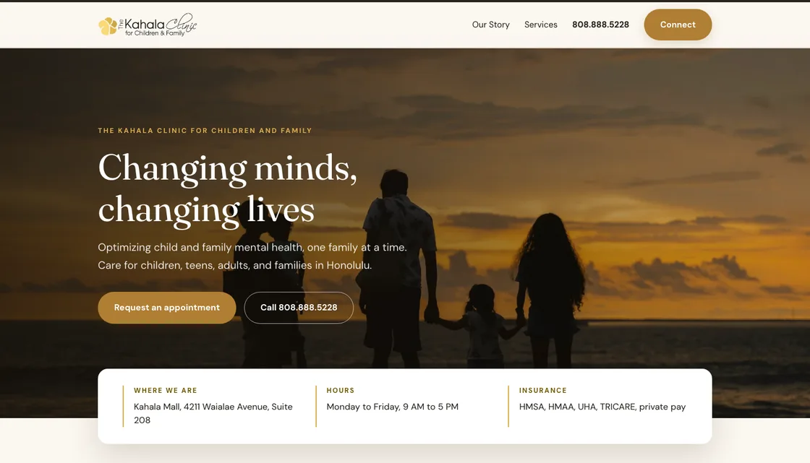

Sunlit
This one keeps the sand and gold you use today and just builds it properly. A full width sunset photo opens the page, then a white card lifts up over the bottom of it holding your location, hours, and insurance, so the three things people ask first are answered before they scroll. Section backgrounds alternate between cream, white, and sand so each block feels like its own moment instead of one long stack.
If Kimo wants the site to still feel like Kahala Clinic, this is that. It is the same personality, with depth, spacing, and a real typeface doing the work your current site asks color alone to do.
Type and color
A warm serif for headlines and a clean sans for reading. Your existing cream, sand, and gold, with a deep gold band carrying the mission.
Building it in Webflow
Almost all of it is standard Webflow. The layout, the rounded cards, the lifted white card over the photo, and the hover effects are all normal settings. The only custom piece is the small script that fades sections in as you scroll, which is one block of code pasted once in the site settings. Two fonts get switched on in the dashboard.